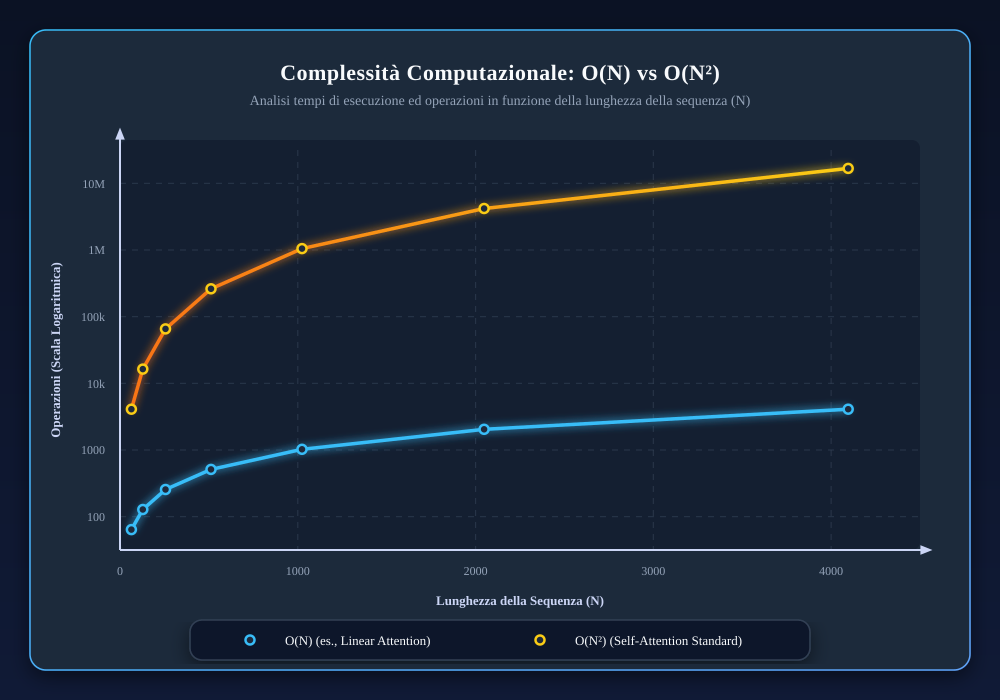
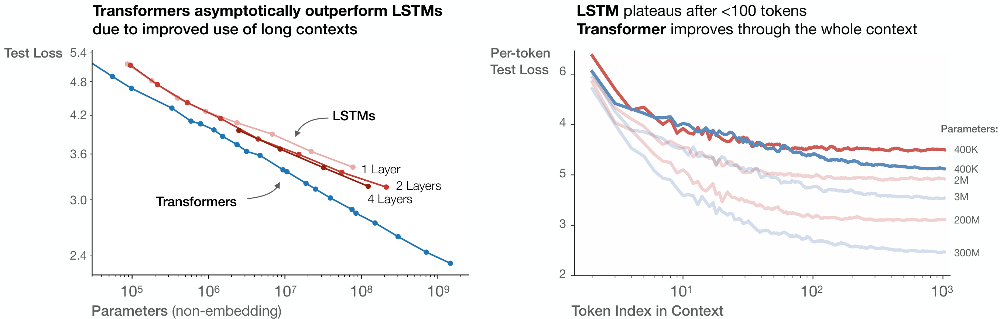

Dai modelli NLP classici ai LLM (Parte 2)

Articolo in revisione (clicca per aprire)
Questo articolo è ancora in lavorazione e sotto revisione editoriale. Alcuni paragrafi potrebbero risultare incompleti o cambiare in modo significativo nelle prossime settimane.
Benvenuti alla terza puntata del percorso per diventare GeoAI engineer. In quest'articolo continuiamo a parlare di storia e ci focalizziamo su come siamo arrivati a GPT, Gemini e compagnia, e da dove siamo partiti. Ma non ci limitiamo solo a questo.
Buona lettura!
Introduzione
Se nella parte 1 abbiamo visto le fondamenta (modelli statistici, embedding classici, RNN/LSTM/GRU), e quali problemi erano rimasti aperti anche con le prime reti neurali, qui analizziamo ciò che ha permesso il vero salto. Entriamo nell'era Transformer e vediamo perché ha cambiato completamente il modo in cui le macchine capiscono il testo.
Da questo punto in poi non parliamo più solo di "modelli migliori", ma di scalabilità, pre-training su larga scala e nascita dei moderni LLM: come siamo passati da reti ricorrenti lente e con memoria corta a sistemi capaci di gestire contesti ampi, generalizzare meglio il linguaggio umano e diventare la base di strumenti come ChatGPT, Gemini e simili.
L'obiettivo di questa parte è duplice. Prima capire i concetti tecnici chiave, come self-attention, scaling, differenze tra famiglie di modelli. Poi leggere gli LLM con una mentalità tecnica, cioè come componenti da integrare con retrieval, tool, guardrail e osservabilità.
Chiudiamo con la parte più pratica: i limiti strutturali reali (allucinazioni, grounding, costi, fragilità) e il collegamento con il contesto di questo percorso, ovvero l'ambito geoinformatico. Basta preamboli, partiamo!
La rivoluzione del Transformer
Nel 2017 Vaswani et al. pubblicano "Attention Is All You Need", introducendo il Transformer, un'architettura che elimina completamente la ricorrenza a favore di un meccanismo di self-attention generalizzato.
Vale la pena fare un passo indietro prima di entrare nel tecnico. L'attenzione come idea non nasce dal nulla nel 2017: Bahdanau et al. nel 2014 l'avevano già introdotta nei modelli seq2seqSeq2seq significa sequence-to-sequence: una famiglia di modelli che prende in input una sequenza e ne produce un'altra. Esempi classici sono traduzione automatica, riassunto e trascrizione, dove a una frase o sequenza di partenza corrisponde una nuova sequenza in uscita. per la traduzione automatica, dove serviva a permettere al decoder di "guardare" selettivamente l'intera sequenza in ingresso invece di comprimerla in un singolo vettore. Quello che Vaswani et al. hanno fatto è radicalizzare quell'intuizione: se l'attenzione funziona così bene come meccanismo ausiliario, perché non costruire un'architettura che sia solo attenzione? Formalizzato, quel ragionamento ha prodotto il Transformer.
Questo cambiamento concettualmente semplice ha innescato una rivoluzione: il Transformer ha dimostrato di poter scalare molto meglio, essere addestrato in parallelo e raggiungere performance superiori su compiti come la traduzione in una frazione del tempo di training dei modelli ricorrenti.
 Figura 01: Schema concettuale dell'architettura Transformer. Elimina la ricorrenza e sfrutta la self-attention multi-head e il positional encoding per catturare le relazioni tra i token. (Fonte: realizzazione personale, ispirato a Vaswani et al. 2017)
Figura 01: Schema concettuale dell'architettura Transformer. Elimina la ricorrenza e sfrutta la self-attention multi-head e il positional encoding per catturare le relazioni tra i token. (Fonte: realizzazione personale, ispirato a Vaswani et al. 2017)
Vediamo i concetti chiave dell'architettura Transformer:
- Self-Attention: è il cuore di tutta l'architettura. In un layer di self-attention, ogni token nella sequenza "presta attenzione" a tutti gli altri, per decidere quali sono più rilevanti per interpretare quella posizione. Tecnicamente, per ogni token $i$ si calcola un vettore di query $q_i$ e, per ogni potenziale riferimento $j$, un vettore chiave $k_j$ — entrambi ottenuti proiettando gli embedding iniziali. Si calcola un punteggio di affinità $s_{ij} = q_i \cdot k_j$, che è tanto più alto quanto la parola $j$ è rilevante per interpretare $i$. Questi punteggi producono una somma pesata delle value $v_j$ (altra proiezione di ogni token) per generare l'output per la posizione $i$. In formula:
$$\text{Attention}(Q, K, V) = \text{softmax}\left(\frac{QK^T}{\sqrt{d_k}}\right)V$$
dove $Q$ è la matrice delle query di tutti i token, $K$ delle chiavi, $V$ dei valori, e $\sqrt{d_k}$ è un fattore di normalizzazione legato alla dimensione dei vettori chiave. La softmax produce pesi che mettono in risalto le posizioni più affini alla query. Il risultato: l'output per il token $i$ è una combinazione delle rappresentazioni di tutti gli altri token, ponderata in base alla rilevanza contestuale. Ad esempio, in "Lei posò il bicchiere perché era fragile.", la parola "fragile" come query assegnerà alta attenzione a "bicchiere" e molto meno a "lei". Il modello riesce così a risolvere il riferimento correttamente. È bene però precisare che questo comportamento è emergente dall'addestramento (non è garantito a priori da un singolo layer) e nella pratica si osserva su head specifiche, non sull'intera rete in modo uniforme.
- Multi-Head Attention. Invece di una singola proiezione $Q, K, V$, il Transformer ne esegue diverse in parallelo, da cui il termine multi-head. Ogni head è come un canale di attenzione che può focalizzarsi su un tipo diverso di relazione: una head potrebbe catturare le dipendenze sintattiche soggetto-verbo, un'altra le coreferenze pronominali, e così via. I risultati vengono concatenati e combinati linearmente. Il guadagno è nella capacità espressiva: il modello può considerare più aspetti di dipendenza simultaneamente per ogni token.
- Positional Encoding. La self-attention, presa da sola, tratta gli input come un insieme non ordinato. Se scambiamo due token, i punteggi di attenzione cambiano, ma l'architettura non ha un senso intrinseco di posizione sequenziale. Per questo si somma a ogni embedding iniziale un vettore di posizione — fisso e sinusoidale nel Transformer originale, oppure appreso durante il training nelle varianti successive. In questo modo il modello può distinguere "il gatto ha mangiato il topo" da "il topo ha mangiato il gatto" sulla base della posizione relativa dei token, non solo del loro contenuto.
Encoder-Decoder e le sue varianti. Il modello originale di Vaswani et al. è un'architettura Encoder-Decoder. L'Encoder legge la sequenza in ingresso producendo rappresentazioni contestuali; il Decoder genera la sequenza in uscita un token alla volta, guardando sia gli stati dell'encoder (via cross-attention) sia i token già prodotti (via self-attention autoregressiva mascherata). Vale la pena notare che durante il training il decoder non usa i propri token generati come input, ma quelli corretti del riferimento — una tecnica chiamata teacher forcing. Nell'inferenza, invece, procede davvero un token alla volta. Oggi esistono configurazioni semplificate: i modelli tipo BERT usano solo l'encoder (self-attention bidirezionale su tutto input, per compiti di comprensione), mentre modelli tipo GPT usano solo il decoder (self-attention unidirezionale, autoregressiva, per generazione di testo).
Perché il Transformer scala (e ha cambiato tutto)
Fin qui abbiamo visto cosa fa la self-attention a livello di singolo token. Ma il vero motivo per cui il Transformer ha ribaltato il campo non è solo la qualità delle rappresentazioni: è che scala. E scala su hardware reale, con dataset reali, in tempi ragionevoli. Vediamo perché.
Parallelizzazione totale durante il training
Partiamo dalla parallelizzazione. Nelle reti ricorrenti, la computazione è vincolata alla sequenza: ogni passo dipende dallo stato nascosto del passo precedente, il che rende impossibile parallelizzare l'elaborazione di una singola sequenza. Come scrivono Vaswani et al. nel paper originale, la dipendenza sequenziale rimane solo nell'autoregressione del decoder durante l'inferenza (generazione passo passo), ma durante il training anche il decoder può essere addestrato in parallelo usando maschere (tutta la sequenza di output "shiftata" in input). Di fatto, se prima per analizzare 10 parole dovevo fare 10 passi uno dopo l'altro, ora posso fare 1 passo che copre 10 posizioni con attenzione. Il guadagno in efficienza è enorme, specialmente su sequenze lunghe. Transformers allenati su dataset giganteschi sono diventati fattibili solo grazie a questa caratteristica.
Lungo raggio senza degrado
Nei modelli ricorrenti, collegare due token distanti richiede di propagare il segnale attraverso tutti i token intermedi e i gradienti potrebbero svanire lungo il percorso. Ogni passo è una possibile fonte di attenuazione del gradiente. Nel Transformer, qualsiasi coppia di token è collegata direttamente: il numero di operazioni sequenziali necessario per connettere due posizioni qualsiasi è costante, indipendentemente dalla distanza, mentre in un RNN quel numero cresce linearmente con la distanza. La conseguenza pratica è che il Transformer cattura dipendenze a lungo raggio (soggetto e verbo separati da una lunga subordinata, coreferenze pronominali, accordi a distanza) in modo molto più affidabile, senza bisogno di meccanismi aggiuntivi.
Riassumendo, il Transformer in un colpo calcola dipendenze globali. Questo porta a catturare naturalmente relazioni a lungo termine (es. chi è soggetto di un verbo lontano, concordanze a distanza, ecc.) molto meglio dei RNN. Formalmente, nei Transformer il numero di operazioni necessario per collegare due posizioni qualsiasi è costante, mentre in un RNN è proporzionale alla loro distanza nella sequenza.
Complessità e trade-off
Niente è gratis. Il costo computazionale della self-attention cresce come $O(N^2)$ con la lunghezza della sequenza, perché ogni token viene confrontato con tutti gli altri: la matrice dei punteggi di attenzione è $N \times N$, e va calcolata, normalizzata e moltiplicata per le value. Questa complessità quadratica si manifesta sia in termini di tempo sia di memoria, e diventa proibitiva per sequenze molto lunghe. Un RNN ha complessità $O(N)$ per passo, quindi in linea di principio è più economico su sequenze lunghe, ma paga il prezzo della serializzazione. Per le lunghezze tipiche delle applicazioni NLP (dell'ordine delle migliaia di token), il trade-off favorisce ampiamente il Transformer grazie all'esecuzione parallela. Per sequenze davvero molto lunghe (decine o centinaia di migliaia di token), il collo di bottiglia diventa un bel problema: è per questo che negli anni sono emersi molti approcci di sparse attention, come Sparse Transformer, Longformer, BigBird che limitano il calcolo dell'attenzione a sottoinsiemi strutturati di coppie di token, raggiungendo complessità sub-quadratica pur mantenendo buona parte della capacità espressiva.

Figura 02: Rappresentazione qualitativa del trade-off tra complessità computazionale e qualità del modello: architetture più espressive tendono a offrire prestazioni migliori, ma al prezzo di costi di training e inferenza più elevati. (Fonte: APXML ma riadattato)Maggiore espressività
Ogni layer del Transformer non è solo attenzione: dopo il blocco di multi-head attention c'è una rete feed-forward position-wise, cioè un piccolo MLP applicato indipendentemente a ciascuna posizione. Questo introduce non-linearità e permette al modello di "digerire" le informazioni sintetizzate dall'attenzione prima di passarle al layer successivo. La combinazione di multi-head attention e FFN dà al Transformer una capacità rappresentativa che scala in modo favorevole con la profondità: più layer si impilano, più il modello può catturare strutture astratte. La comunità ha osservato che Transformer sufficientemente grandi tendono ad apprendere spontaneamente pattern grammaticali, relazioni semantiche e forme latenti di ragionamento, non perché siano stati progettati per farlo esplicitamente, ma come comportamento emergente dello scaling.
RNN vs Transformer
Vale la pena mettere in fila i punti di confronto in modo diretto, senza girarci intorno.
Sul parallelismo, i modelli ricorrenti fattorizzano la computazione lungo le posizioni della sequenza, generando stati nascosti uno dopo l'altro in modo strettamente sequenziale. Il Transformer elabora tutti i token in parallelo tramite operazioni matriciali. Su hardware moderno, la differenza in termini di tempo di training è enorme, specialmente su dataset grandi.
Sulla memoria a lungo termine, in un RNN, tutto quello che il modello "sa" della sequenza fino al passo $t$ è compresso nel vettore nascosto $h_t$, con potenziale degradazione man mano che la distanza aumenta. Nel Transformer, la self-attention ha accesso diretto a tutte le posizioni precedenti a ogni layer: il percorso massimo tra due posizioni qualsiasi è $O(1)$ per la self-attention, contro $O(N)$ per un RNN.
Sulla complessità, come già detto, $O(N^2)$ per la self-attention contro $O(N)$ per passo per un RNN. Il Transformer è più costoso in memoria ma molto più parallelizzabile, e su sequenze di lunghezza moderata vince in velocità di wall-clock. Su sequenze molto lunghe il termine quadratico inizia a pesare, e lì entrano in gioco le varianti efficienti che abbiamo menzionato prima.
Sui dati necessari, il Transformer ha più parametri e più flessibilità, quindi tende a richiedere grandi quantità di dati per esprimere il suo potenziale. Fortunatamente, la disponibilità di corpus enormi e l'addestramento auto-supervisionato tramite language modelingLanguage modeling qui non richiede annotazioni umane: basta grande quantità di testo grezzo, da cui il modello impara a predire token mancanti o successivi. hanno reso questo requisito soddisfabile su scala industriale.
Sull'architettura modulare: ogni layer è una serie di operazioni matriciali standardizzate, facilmente distribuibile su cluster GPU. Questo ha reso il Transformer un'architettura su cui è semplice iterare: si sostituisce uno schema di attenzione, si prova un diverso positional encoding, si aggiunge un nuovo tipo di normalizzazione, senza stravolgere il resto. Il risultato è stato un ecosistema di varianti e miglioramenti che ha accelerato la ricerca in modo notevole.
Schema di un encoder layer (passo per passo)
Per chiudere il quadro, vale la pena ripercorrere cosa succede concretamente dentro un singolo layer dell'encoder.
Input Embedding + Positional Encoding. Ogni token viene convertito nel suo vettore di embedding, a cui viene sommato il vettore di posizione. Da questo momento in poi, il segnale porta sia informazione semantica sia posizionale.
Self-Attention multi-head. Si calcolano $Q$, $K$, $V$ per ogni token e si computa l'attenzione su tutti gli head in parallelo. Ogni token raccoglie informazioni pesate dagli altri. Nel decoder autoregressivo, una maschera causale impedisce di "guardare" i token futuri.
Add & Norm. Una connessione residua somma l'input originario del sublayer al suo output, seguita da layer normalization. Questo aiuta il flusso del gradiente e la stabilità numerica durante il training di reti profonde.
Feed-Forward Network. Un MLP a due strati applicato separatamente a ciascuna posizione, la stessa rete per tutti i token, ma con pesi indipendenti da layer a layer. Di solito espande la dimensione interna (ad esempio da $d_\text{model} = 512$ a $4 \times 512 = 2048$) e poi la ricontrae. Serve a introdurre non-linearità e a "elaborare" le rappresentazioni prodotte dall'attenzione.
Add & Norm. Un'altra connessione residua, questa volta sull'output del FFN, seguita da normalizzazione.
Uno stack di $N$ layer così strutturati forma l'encoder. Nel decoder, ogni layer aggiunge un terzo blocco: la cross-attention, dove le query provengono dal layer precedente del decoder e le key/value dall'output finale dell'encoder. È attraverso questo meccanismo che il decoder, durante la generazione, può condizionarsi sull'intera sequenza di input codificata. Questo è utile in tutti i compiti seq2seq, dalla traduzione al riassunto automatico.
In conclusione il Transformer riesce a modellare dipendenze complesse e a lungo raggio con efficienza, ed è altamente scalabile. Dal 2018 in poi, ogni record in NLP è stato abbattuto da modelli basati su questa architettura. Ed è la base di praticamente tutti i Large Language Models moderni.
Dai Transformer ai grandi modelli di linguaggio
Con il Transformer come nuovo blocco fondamentale, il passo successivo è stato scalare modelli e dataset a livelli prima impensabili. Sono emerse due grandi famiglie di modelli pre-addestrati sul linguaggio:
- Modelli autoregressivi (tipo GPT): utilizzano solo la metà decoder del Transformer e sono addestrati come un modello di linguaggio tradizionale: dato il contesto precedente, predici il prossimo token.
Esempio: data la sequenza "La capitale della Francia è [MASK].", il modello (con la maschera che gli impedisce di vedere "Parigi") impara a continuare plausibilmente la frase (in questo caso con "Parigi").
Questi modelli apprendono a generare testo uno step alla volta, e grazie all'attenzione hanno ampia visione sul contesto già generato. L'addestramento è auto-supervisionato sul testo grezzo, senza bisogno di annotazioni umane. GPT-2 (OpenAI, 2019) con 1,5 miliardi di parametri fu già uno shock per la capacità di generare testi lunghi e coerenti.
Ma la vera svolta arrivò con GPT-3 (2020, 175 miliardi di parametri, un ordine di grandezza in più rispetto a qualsiasi modello denso precedente): a quella scala, il modello mostrava abilità nuove non previste esplicitamente in fase di addestramento, prima tra tutte il few-shot learning. In pratica, scalare i modelli di linguaggio migliora drasticamente le performance task-agnostiche in regime few-shot, talvolta raggiungendo competitività con approcci fine-tuned di precedente stato dell'arte. Il modello non viene riaddestrare, non riceve gradienti aggiornati: impara il compito direttamente dal contesto del prompt. Questo ha inaugurato l'era dei chatbot generativi come ChatGPT.
In pratica GPT-3 ha dimostrato che un modello enorme allenato su quasi tutto internet in modo autoregressivo può "imparare a imparare" dai prompt, generalizzando a molti task prima risolvibili solo con modelli specifici.
- Modelli auto-encoder (tipo BERT): utilizzano solo la parte encoder del Transformer e sono addestrati con compiti bidirezionali come il Masked Language Modeling (MLM). In BERT (Devlin et al., 2018) si maschera random il 15% delle parole in input e il modello deve predirle guardando sia a sinistra che a destra (quindi sfrutta pienamente l'attenzione bidirezionale). Per farlo, BERT non fa altro che sfruttare il Masked Language Modeling (MLM) (MLM), il quale maschera casualmente una parte dei token dell'input e l'obiettivo è predire i token originali basandosi sul solo contesto, diversamente da un modello left-to-right come GPT, qui il segnale viene sia da sinistra sia da destra.
Inoltre BERT fu addestrato anche con un compito ausiliario di Next Sentence PredictionNext Sentence Prediction è un compito in cui il modello deve stabilire se una seconda frase segue davvero la prima nel testo originale, oppure se è una frase casuale. Serve a far apprendere relazioni tra frasi e coerenza del discorso.: decidere se due frasi erano in sequenza nel testo originale), incoraggiando la comprensione del discorso generale. Per maggiori dettagli tecnici su questo, lascio il riferimento al paper.
Andiamo avanti. BERT ha fornito embedding contestuali potenti che, con un fine-tuning leggero, hanno migliorato radicalmente decine di task NLP (dalla classificazione, al QAQA significa Question Answering: compiti in cui il modello deve rispondere a una domanda, spesso trovando o generando la risposta corretta a partire da un testo o da un contesto fornito., al NERNER significa Named Entity Recognition: il compito di individuare nel testo entità come persone, luoghi, organizzazioni, date o importi, e assegnare loro l'etichetta corretta.). Questi modelli non sono progettati per generare arbitrariamente (non hanno un decoder autoregressivo), ma eccellono in comprensione e in produzione di rappresentazioni da dare in input a semplici classificatori. BERT fu uno spartiacque: in pochi mesi praticamente ogni benchmark NLP fu dominato da varianti di BERT. Tra queste: RoBERTa (2019, addestrato meglio e senza NSPNSP è l'acronimo di Next Sentence Prediction, il compito ausiliario usato in BERT per far apprendere se una frase segue realmente un'altra nel testo originale.), ALBERT (2019, più piccolo grazie a fattorizzazione e condivisione), DistilBERT (2019, compresso), ecc.
Successivamente, l'attenzione si è spostata sempre più sui modelli generativi di grandi dimensioni, in particolare con l'uscita di GPT-3. La comunità ha scoperto che scalare la dimensione del modello e dei dati porta a miglioramenti sostanziali e talvolta qualitativamente nuovi. Questo è stato formalizzato negli Scaling Laws di Kaplan et al. (OpenAI 2020): la perplexityPerplexity è una metrica che misura quanto bene un language model predice i token del testo: più è bassa, meno il modello è “sorpreso” dai dati e migliore è la sua capacità predittiva. decresce seguendo all'incirca una legge di potenza al crescere di alcuni parametri. In particolare, loro notano che la perdita sui dati segue una legge di potenza con la dimensione del modello, la dimensione del dataset e la quantità di calcolo usata per il training, con trend che coprono oltre sette ordini di grandezza. Nessun segno di saturazione appariva all'orizzonte: bigger is better. In altre parole, se raddoppi parametri (e proporzionalmente i dati e il calcolo), l'errore scende in modo prevedibile (anche se con rendimenti leggermente decrescenti). Ciò ha incoraggiato una rincorsa alle grandi dimensioni nei modelli: GPT-3 con 175B fu seguito da modelli ancora più grandi come Megatron-Turing NLG (Microsoft-Nvidia, 530B, 2021) e vari modelli cinesi da 200+ miliardi.

Figura 03: Confronto tra Transformer e LSTM al crescere dei parametri e della lunghezza del contesto. Il messaggio centrale è che i Transformer continuano a beneficiare di contesti più lunghi, mentre gli LSTM tendono a saturare prima. (Fonte: Kaplan et al., 2020)Tuttavia, nel 2022 uno studio di DeepMind (Chinchilla di Hoffmann et al.) ha ricalibrato la prospettiva: si è scoperto che molti LLM erano sotto-addestrati rispetto alla loro dimensione. Chinchilla (70B parametri) fu addestrato con 4 volte più dati di quelli usati per Gopher (un modello molto più grande di GPT-3), mostrando performance superiori a questi modelli più grandi, pur avendo meno di un terzo dei parametri, perché aveva utilizzato meglio il budget di calcolo.
In pratica, non conta solo aumentare i parametri, ma assicurarsi di avere abbastanza dati per addestrarli bene. Il che apre un problema nuovo: una volta raschiato tutto il testo disponibile su internet, servono nuovi dati (sintetici?) o multimodali per continuare a spingere il training. Ed è lì che si è spostato il fronte della ricerca.
Abilità emergenti
Un fenomeno tra i più discussi nell'ultimo lustro è la comparsa di capacità che nei modelli piccoli sembrano semplicemente assenti. Wei et al. (2022) hanno catalogato e definito con precisione queste abilità emergenti: un'abilità è emergente se non è presente nei modelli più piccoli ma compare in quelli più grandi, e quindi non può essere prevista semplicemente estrapolando le performance su scala ridotta.
La cosa intrigante non è tanto che i modelli grandi siano migliori, questo era sicuramente atteso. Il punto è che le abilità emergenti hanno prestazioni vicine al caso nei modelli piccoli, e la loro comparsa non può essere prevista estrapolando leggi di scala basate su modelli di scala ridotta. Funzionano bene sopra una certa soglia, restano sostanzialmente casuali sotto: sembra quindi che non ci sia un miglioramento graduale, quanto più un salto.
Esempi concreti. Su task di calcolo aritmetico e ragionamento multi-step, i modelli mostrano prestazioni casuali su molti ordini di grandezza di calcolo o parametri, per poi raggiungere improvvisamente un'accuratezza robusta oltre una certa soglia di scala. Un caso particolarmente studiato è il chain-of-thought prompting: la tecnica di guidare il modello a produrre una catena di passi intermedi prima della risposta finale. I ricercatori hanno scoperto nel 2022 che il chain-of-thought prompting non ha effetto positivo nei modelli piccoli, e produce guadagni di performance solo in modelli con circa 100 miliardi di parametri. Nei modelli più piccoli le catene prodotte sono fluenti ma illogiche, e peggiorano i risultati rispetto al prompting diretto.
Il dibattito però non è chiuso. Schaeffer et al. (2023) hanno proposto una spiegazione alternativa, quella che hanno chiamato la "mirage hypothesis": le abilità emergenti appaiono a causa della scelta della metrica da parte del ricercatore, non per via di cambiamenti fondamentali nel comportamento del modello con la scala. Metriche non lineari o discontinue producono abilità emergenti apparenti, mentre metriche lineari o continue producono cambiamenti lisci, continui e prevedibili. In sostanza: la discontinuità potrebbe stare nella metrica di misurazione, non tanto nel modello.
La questione rimane aperta e molto attiva in letteratura. Quello che si può dire con ragionevole sicurezza è che modelli molto grandi mostrano comportamenti qualitativamente diversi da quelli piccoli nella pratica: seguono istruzioni complesse (instruction following), pianificano ragionamenti in più passi, si interfacciano con strumenti esterni se opportunamente istruiti. Che questa proprietà sia emergente "veramente" nel senso fisico del termine, o un artefatto della misurazione, o qualcosa nel mezzo, è uno dei nodi più interessanti della ricerca attuale. Quello che so è che un modello piccolo come Gemma di Google non ha assolutamente difficoltà nel reasoning. Per cui penso che ad oggi questi modelli open (non totalmente open source, dato che non sappiamo la vera architettura e le tecniche di ottimizzazione), siano molto performanti e abbiano raggiunto le performance. Di conseguenza questa mitica soglia è evidente che sia abbassata e di tanto.
Siamo sicuri che "più grande = migliore?"
La spinta a scalare ha portato progressi enormi, ma non ha risolto tutti i problemi. Oltre al costo computazionale (addestrare GPT-3 costò nell'ordine dei milioni di dollari, GPT-4 sensibilmente di più) ci sono limiti pratici difficili da ignorare. I modelli molto grandi sono difficili da aggiornare, da distribuire e da far girare con latenza accettabile in produzione. Alcune fragilità persistono anche ingrandendo il modello: la tendenza ad allucinare, i vari bias sistematici, la difficoltà a dire "non lo so". Anzi, i modelli molto grandi spesso allucinano in modo più convincente, il che rende gli errori più difficili da individuare.
Come già visto con Chinchilla, non serve salire all'infinito con i parametri se non si possono alimentare con dati adeguati. Oggi una parte significativa della ricerca punta su un'idea diversa: lo scaling efficiente. Migliore selezione dei dati, architetture specializzate per contesti lunghi (Transformer con attenzione sparse o parzialmente ricorrente), e soprattutto modelli più piccoli ma specializzati, i cosiddetti Small Language Models.
Un esempio diventato riferimento nel campo è Alpaca (Stanford, 2023): un modello di soli 7 miliardi di parametri, derivato da LLaMA di Meta tramite fine-tuning su 52.000 esempi di instruction-following generati da un modello come GPT-3.5 (text-davinci-003). Il costo dell'intero processo (generazione dei dati + fine-tuning) fu inferiore ai 600 dollari, eppure in una valutazione blind tra Alpaca 7B e text-davinci-003, i due modelli hanno ottenuto prestazioni molto simili: 90 preferenze contro 89 per Alpaca. Alpaca è rimasto un caso di studio importante: non tanto per le sue performance assolute, ma per quello che dimostra sul rapporto tra dimensione del modello e utilità pratica quando si dispone di dati di fine-tuning di qualità.
Ora dico un mio pensiero. In futuro saranno i (modelli) piccoli ad aver la meglio. La conferma più recente è Gemma 4 (Google DeepMind, aprile 2026): quattro modelli open-weight costruiti sulla stessa ricerca di Gemini 3, con licenza Apache 2.0 e dimensioni che vanno da pochi miliardi di parametri fino a 31B. Il modello da 31B ottiene un punteggio ELO di circa 1452 su Arena AI, collocandosi al terzo posto globale tra i modelli open, ma è il più piccolo tra quelli a podio. La variante MoE da 26B raggiunge prestazioni simili con soli 3,8 miliardi di parametri attivi per token, una differenza di efficienza notevole. Il punto non è il numero di parametri: è quanto riesci a fare con quelli che attivi.
In conclusione, dal 2018 a oggi siamo passati dal Transformer da ~110 milioni di parametri di BERT-base a LLM da centinaia di miliardi, e poi di nuovo verso modelli più piccoli ma meglio addestrati. Questa traiettoria non è andata solo in una direzione. Ha sbloccato capacità latenti e aperto nuove applicazioni, ma ha anche evidenziato problemi di allineamento (come evitare output tossici, garantire veridicità) e di efficienza nel deployment. Questo ci porta al contesto attuale, dove un LLM raramente è usato da solo: viene integrato in sistemi più ampi per essere reso affidabile, aggiornabile e utile in contesti applicativi reali.
Conclusione
Se nella parte 1 avevamo lasciato l'NLP in un punto in cui i modelli iniziavano finalmente a "ricordare", qui abbiamo visto il vero cambio di passo: il Transformer non ha solo migliorato le prestazioni, ha cambiato il modo stesso di progettare sistemi basati sul linguaggio. Da lì sono arrivati BERT, GPT, le scaling laws, le abilità emergenti e anche una nuova consapevolezza: più potenza non significa automaticamente più affidabilità.
Oggi infatti un LLM utile non è quasi mai un oggetto isolato. È un componente dentro un sistema più grande, con retrieval, tool, controlli e osservabilità. Ed è forse questa la lezione più importante da portarsi a casa: capire gli LLM non vuol dire solo sapere come generano testo, ma anche sapere quando fidarsi, quando no, e come costruirci attorno qualcosa che regga davvero nel mondo reale.
Fonti (link citati nella parte 2)
Di seguito trovi solo fonti i cui link sono presenti nel testo attuale:
- Vaswani et al. (2017) - Attention Is All You Need
- Bahdanau et al. (2014) - Neural Machine Translation by Jointly Learning to Align and Translate
- Akanksha Sinha - From N-grams to Transformers: Tracing the Evolution of Language Models
- APXML - Self-Attention Complexity
- OpenAI - Sparse Transformer
- SLDS LMU - Attention and Self-Attention for NLP
- Brown et al. (2020) - Language Models are Few-Shot Learners
- Devlin et al. (2018) - BERT: Pre-training of Deep Bidirectional Transformers for Language Understanding
- Hugging Face - RoBERTa
- Hugging Face - ALBERT
- Hugging Face - DistilBERT
- Kaplan et al. (2020) - Scaling Laws for Neural Language Models
- Hoffmann et al. (2022) - Training Compute-Optimal Large Language Models
- Wei et al. (2022) - Emergent Abilities of Large Language Models
- Google Research - Emergent Abilities of Large Language Models
- Emergent Mind - Emergent Abilities of Large Language Models
- Wei et al. (2022) - Chain-of-Thought Prompting Elicits Reasoning in Large Language Models
- Schaeffer et al. (2023) - Are Emergent Abilities of Large Language Models a Mirage?
- Stanford CRFM - Alpaca: A Strong, Replicable Instruction-Following Model
- Google - Gemma 4 collection
- WaveSpeed - What Is Google Gemma 4?